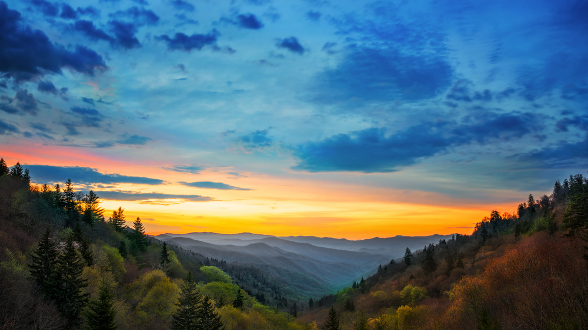
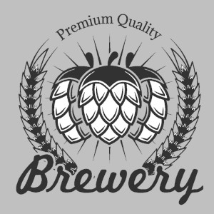
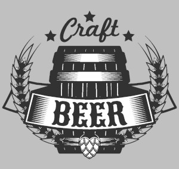

We here at Western North Carolina Beer Tours want to welcome you with open arms. Our mission is to ensure your time in our mountain town is filled with great memories by creating a custom craft beer experience with a little bit of knowledge and a whole lot of fun!
We here at Western North Carolina Beer Tours want to welcome you with open arms. Our mission is to ensure your time in our mountain town is filled with great memories by creating a custom craft beer experience with a little bit of knowledge and a whole lot of fun!

I'm passionate about everything I do. This year, 2020, I decided to pair my love for travel,
craft beer and most importantly connecting with people, to create a business that could help our community during the pandemic.

Please feel free to email us for more information. Continue to check back with us for more updates.
We want to start with a soft launch this year and look forward to be up and running early 2021.
wncbeertours@gmail.com
wncbeertours@gmail.com